Spring Tool Suite 3.7.0: New and Noteworthy
General Updates
Eclipse Mars GA (4.5)
The default STS distribution is now based on the just released Eclipse Mars GA release.
Eclipse Mars comes with a buncn of improvements and updates, read more at Eclipse Mars New & Noteworthy.
Pivotal tc Server updated to 3.1.1
The latest Pivotal tc Server release 3.1.1 is now included in the STS distribution bundle.
Mac OS X app signing is back
STS for Mac OS X is now signed properly again to pass Gatekeeper tests and to provide a smooth download and start experience.
Latest Fix for Maven Integration for Eclipse (m2e 1.6.1) included
Right after Eclipse Mars went live, the m2e team discovered an issue with m2e 1.6.0 and delivered a fix. This is included in the STS 3.7.0 distribution.
Spring Tooling
Spring Boot YML Editor
The Spring Yml Editor is a specialization of the YEdit Yaml editor. It understands Spring Boot's configuration metadata (this is information stored in "spring-configuration-metadata.json" files included in the jars of Spring Boot Dependencies).
This 5 minute video shows the editor in action:
The editor provides the following features:
The Content Assistant suggests auto-completions as you type.
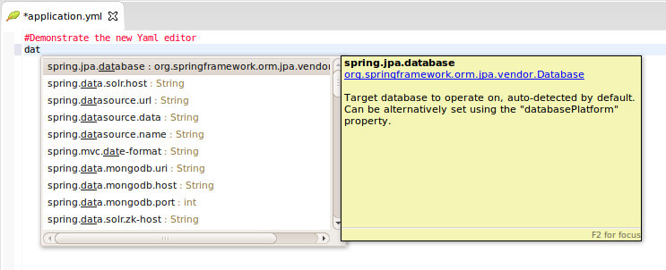An Info Hover is shown when you hover the mouse over a known property name.
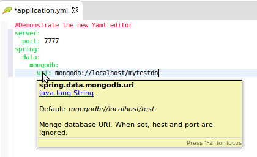Use CTRL-CLICK navigation to take you directly to the source code where a known property-name is defined.
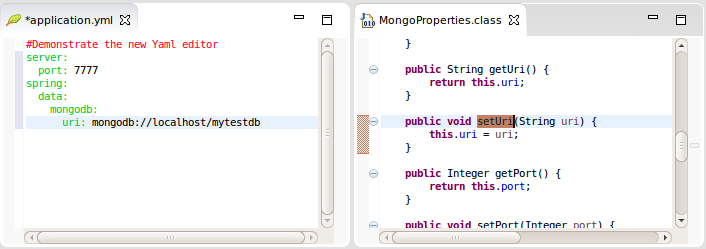The Reconciler shows errors and warnings as you type.
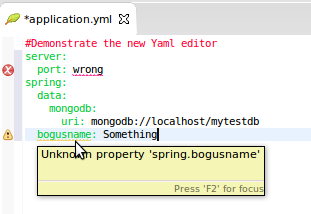Live Meta Data: You can define your own properties by annotating your own classes with a '@ConfigurationProperties'.

Add the 'spring-boot-configuration-processor' as a dependency in your 'pom' (or 'build.gradle') and STS will configure Eclipse's Annotation Processor to generate the metadata for your project on-the-fly.
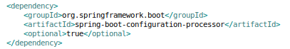You do not have to add this dependency to your pom manually. STS will issue a warning when the dependency is missing. Select the 'Quick Fix' and STS will add the processor to your pom for you.
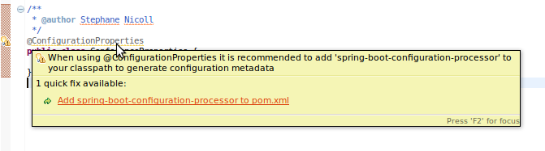Now, any time you define a new property, the editor will recognize it instantly.
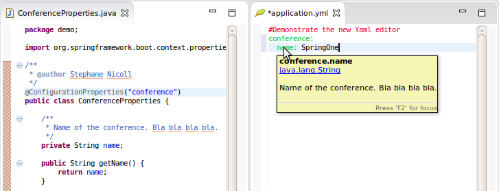Enabling the Spring Yaml Editor: STS automatically configures Eclipse Content Types so that the Spring Yaml Editor is used for any file called 'application.yml'. This is indicated by the 'Spring Leaf' icon in the Package and Project Explorer Views.
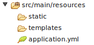Yaml files with other names will be opened with a plain YEdit editor. You can easily override that behavior by right clicking any '.yml' file and selecting "Enable Spring Yaml Editor"
Categories in 'New Spring Starter' Wizard
The 'New Spring Starter Project' wizard now organizes the Boot Starter dependencies into categories:
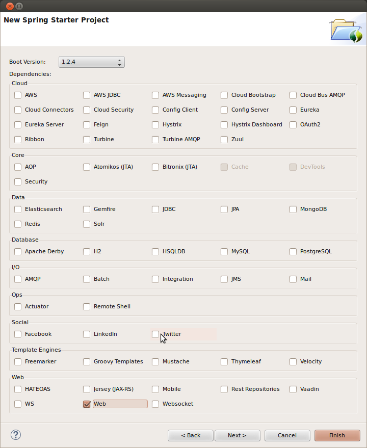Spring Roo 2.0.0.M1 Support
You are able to use Spring Roo 2.0.0.M1 from your STS:

Spring Roo is not longer included on STS distributions. Download Spring Roo 2.0.0.M1 from:

and unzip the distribution.
To include Roo Support on your STS, follow these instructions:
- Open your STS IDE
- Open STS dashboard
- Click on Extensions bottom tab and search Spring Roo
- Install Spring IDE - Roo Extension

- Restart STS IDE
Configure Spring Roo 2.0.0.M1 on your STS:
- Open "Preferences > Spring > Roo Support"
- Add new distribution selecting the downloaded above:
Spring Roo Add-On Suite Generation using STS
As we can see on Spring Roo 2.0 roadmap, Spring Roo 2.0 wants to improve extensibility and increase the collaboration of the Spring Roo project. For that reason since STS 3.7.0, developers could generate its own Spring Roo Add-On Suites using STS.
Create new Spring Roo Project:
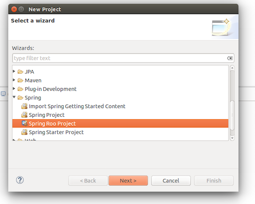Select *Roo Add-on Suite* as Project Type:
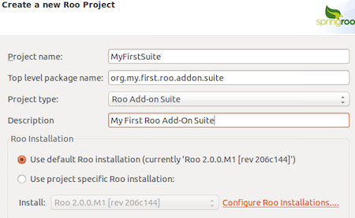Cloud Foundry Eclipse 1.8.3
Spring Boot Deployment
STS 3.7.0 includes Cloud Foundry Eclipse 1.8.3, and contains some new features to improve Spring Boot deployment to Cloud Foundry.
For 3.7.0, users no longer need to manually configure their Spring Boot projects when dragging and dropping them to a Cloud Foundry server instance or deploying them via Run on Server. Users can now create or import their Spring Boot projects into STS and just deploy them directly to Cloud Foundry through drag and drop or Run on Server.
If converting a Spring Boot JAR project to WAR, in some cases the automatic Cloud Foundry deployment needs to be disabled to deploy the WAR application to tcServer or WTP Tomcat server. This is done simply by right-clicking on the project in the Project Explorer and selecting Configure -> Disable as Cloud Foundry App.
Other improvements in 1.8.3 include fixing issues with deploying .jar and .war files defined in a project's manifest.yml. Now, pushing changes to the application will always push the actual file in the file system. A previous bug would only push the old .jar file even if the .jar file had changed.
NOTE: Java 7 JRE in STS is a minimum requirement to use Cloud Foundry Eclipse 1.8.3.
A comprehensive overview of the Cloud Foundry tooling can be found here.
GGTS
Since the end of March Pivotal is no longer sponsoring the Groovy and Grails projects (as described here). Therefore we don't ship new versions of the GGTS bundle anymore. Groovy-Eclipse remains on the dashboard and got fully updated for Eclipse 4.5.
Miscellaneous
Issues resolved in this release
Here is a full list of resolved bugs and enhancement requests for 3.7.0:
Useful Links
Download STS: https://spring.io/tools/sts/all
STS Issue tracker: https://issuetracker.springsource.com/browse/STS
Known issues in this release
No repository available when checking for updates
If you have used a pre-release version of Eclipse Mars or STS, the embedded Eclipse Oomph technology created a cache of p2 repositores in your home directory. This cached p2 data can cause issues when using STS 3.7.0 or Eclipse Mars. The error message looks like STS/Eclipse fails to read information from the main Eclipse Mars p2 repository.
In case you encounter this error, please stop Eclipse/STS, go to your home directory, delete "~/.eclipse/org.eclipse.oomph.p2", and restart Eclipse/STS. The related Eclipse bug is: Bug 470912.
Live configuration-metadata generation requires Spring Boot 1.2.2
Spring Boot 1.2.1 configuration processor does not work correctly when executed from Eclipse's incremental build. This issue is fixed in Spring Boot 1.2.2. This only affects 'live' metadata generated from your own source code, not the metadata that is packaged inside spring-boot jars themselves. So you can still use older versions of Boot, but the 'live metadata' updates will not be accurate. See Spring Boot issue GH-2313 for details.
Dashboard and Retina Displays
When running STS on top of a JDK7, the new dashboard looks a bit blurry when using a HiRes (Retina) display, for example on a Retina MacBook Pro. This is due to the underlying browser technology that is used to display the dashboard content and that is coming from JavaFX. The JavaFX version that ships with JDK7 doesn't support retina displays. The solution for this is to run STS on top of a JDK8 build. The JavaFX version that comes with JDK8 supports retina displays.
Setting the JDK
STS requires a JDK to run on top of. Nevertheless the native launcher component might pick up a JRE automatically if you don't specify which JDK to run STS on top of. To avoid this, you can specify the JDK in the sts.ini file that comes with your STS installation. Add a line at the beginning "-vm" and an additional line below that which points to the "javaw" executable of the JDK on your machine.
Issues on Linux (GTK3)
Eclipse 4.4, upon which STS and GGTS are based, is the first Eclipse release where GTK3 is the default for the SWT widget library. There are some issues with this still:
- STS New Dashboard doesn't work under GTK3 because it uses JavaFX which is not currently compatible with GTK3. Instead the old dashboard will open.
- The Eclipse editor may be slow to respond (Eclipse Bug 434898).
You may also experience other UI rendering glitches. If you exprience any of these problems you can avoid them by forcing SWT to switch back to using GTK2. Just set the environment variable "SWT_GTK3=0" before launching STS or GGTS.